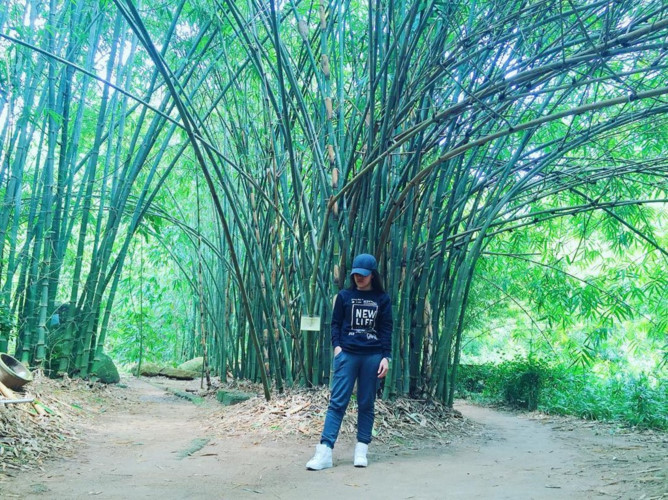

Destinations
Phu An Bamboo Village
Located in Ben Cat District, Binh Duong Province, Phu An Ecological Bamboo Museum and Botanical Reserve, also known as the Phu An Bamboo Village, is one of the biggest bamboo museums in Southeast Asia [...]
Read more
Hoi Khanh Pagoda

Hoi Khanh Pagoda is an historic Buddhist temple built in Binh Duong in 1741. In 2013, the pagoda received a certificate recognising the statue of Buddha entering Nirvana on the roof as the longest example in Asia. The record was recognised by the India-based Asia Book of Records [...]
Read more
Phu Cuong Cathedral
Phu Cuong Cathedral is located at 104 Lac Long Quan Street, Phu Cuong Ward, Thu Dau Mot City. The church was built in Gothic style [...]
Read more